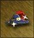
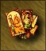
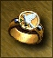
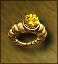
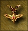
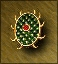
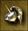
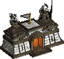
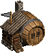

| Miecz Anielskiego Sojuszu | Miejsce: Prawa ręka.
Niweluje negatywne efekty mieszania wojsk z miast dobrych i neutralnych oraz rzuca na początku bitwy czar "Modlitwa" na poziomie mistrzowskim. Artefakty składowe: Zbroja Cudów, Sandały Świętego, Naszyjnik Boskiej Mocy, Lwia Tarcza Odwagi, Miecz Sprawiedliwości, Hełm Boskich Mocy. |
|
| Piorun Tytana | Miejsce: Prawa ręka.
Bohater zyskuje możliwość rzucenia zaklęcia "Błyskawica tytana", zadającego celowi 600 punktów obrażeń, bez ubytku many. Dodaje księgę czarów do posiadanych przedmiotów. Artefakty składowe: Gladius Tytanów, Pancerz Tytana, Tarcza Strażnika Niebios, Hełm Gromu. |
|
 |
Łuk Strzelca | Miejsce: Różności.
Oddziały łucznicze mogą strzelać nawet, gdy zostały zablokowane przez wrogi oddział. Ponadto, nie otrzymują żadnych kar przy ataku na odległość. Artefakty składowe: Elficki Łuk z Drzewa Wiśni, Cięciwa z Grzywy Jednorożca, Anielskie Strzały. |
| Moc Ojca Smoków | Miejsce: Tors.
Zwiększa o 6 punktów wszystkie cztery współczynniki bohatera i zapewnia wszystkim jednostkom ochronę przed czarami poziomów 1-4. Artefakty składowe: Zastygłe Oko Smoka, Oprawione Oko Smoka, Ognisty Język Czerwonego Smoka, Tarcza ze Smoczych Łusek, Kolczuga ze Smoczych Łusek, Nagolenniki ze Smoczych Kości, Płaszcz ze Smoczych Skrzydeł, Naszyjnik ze Smoczych Zębów, Korona ze Smoczych Zębów. |
|
| Zbroja Przeklętego | Miejsce: Tors.
Na początku bitwy na wszystkie wrogie jednostki rzucane są trwające 50 tur czary na poziomie eksperta: spowolnienie, osłabienie, klątwa i pech. Artefakty składowe: Miecz Rycerza Śmierci, Tarcza Zionącej Śmierci, Klatka Żebrowa, Czaszkowy Hełm. |
|
| Płaszcz Nieumarłego Króla | Miejsce: Ramiona.
30% poległych jest wskrzeszane jako szkielety. W przypadku, gdy bohater posiada umiejętność "nekromancja", jest ona wzmocniona. Na poziomie podstawowym wskrzeszane są zombie, na zaawansowanym upiory, a na mistrzowskim lisze. Artefakty składowe: Amulet Grabarza, Kaptur Wampira, Buty Trupa. |
|
| Eliksir Życia | Miejsce: Różności.
Wszystkie stworzenia dostają dodatkowo 25% punktów życia i uzyskują zdolność regeneracji. Nie działa na jednostki nieumarłe. Artefakty składowe: Pierścien Życia, Pierścień Żywotności, Fiolka Żywej Krwi. |
|
| Statua Legionów | Miejsce: Różności.
Przyrost wszystkich jednostek w zamkach gracza zwiększa się o 50%. Artefakty składowe: Głowa Legionisty, Ręce Legionisty, Korpus Legionisty, Lędźwie Legionisty, Nogi Legionisty. |
|
|  | Kapelusz Admirała | Miejsce: Głowa.
Nie ma straty punktów ruchu przy wchodzeniu i schodzeniu ze statku. Zamienia punkty ruchu na lądzie w punkty ruchu na wodzie. Artefakty składowe: Hełm Wilka Morskiego, Naszyjnik Nawigatora. |
| Żródło Maga | Miejsce: Różności.
Codziennie przywraca wszystkie punkty many. Artefakty składowe: Magiczny Znak, Talizman Many, Magiczna Kula Many. |
|
| Pierścień Maga | Miejsce: Dłonie.
Przedłuża trwanie czarów o 50 tur. Artefakty składowe: Zaklęty Naszyjnik, Zaklęty Pierścień, Zaklęty Płaszcz. |
|
| Miasto Dobrobytu | Miejsce: Różności.
Co dzień wytwarza 4 jednostki cennych surowców. Artefakty składowe: Pierścień Nieskończonych Bogactw, Bezcenny Tygiel Rtęci, Płaszcz Błyszczącego Kryształu, Pierścień Płonącej Siarki. |
Artefakty
| Fiolka Smoczej Krwi | relikt | Wszystkie smoki otrzymują premię 5 punktów ataku i obrony. Artefakt nie może zostać wylosowany w zwykłym scenariuszu. | |
| Głowa Legionisty | potężny artefakt | Będąc w aktywnym ekwipunku bohatera znajdującego się w mieście, zwiększa o 1 tygodniowy przyrost stworzeń poziomu 6 (w danym mieście). | |
| Ręce Legionisty | potężny artefakt | Będąc w aktywnym ekwipunku bohatera znajdującego się w mieście, zwiększa o 2 tygodniowy przyrost stworzeń poziomu 5 (w danym mieście). | |
| Korpus Legionisty | pomniejszy artefakt | Będąc w aktywnym ekwipunku bohatera znajdującego się w mieście, zwiększa o 3 tygodniowy przyrost stworzeń poziomu 4 (w danym mieście). | |
| Lędźwie Legionisty | pomniejszy artefakt | Będąc w aktywnym ekwipunku bohatera znajdującego się w mieście, zwiększa o 4 tygodniowy przyrost stworzeń poziomu 3 (w danym mieście). | |
| Nogi Legionisty | skarb | Będąc w aktywnym ekwipunku bohatera znajdującego się w mieście, zwiększa o 5 tygodniowy przyrost stworzeń poziomu 2 (w danym mieście). | |
| Kajdany Wojny | potężny artefakt | Nie pozwalają na poddanie się ani ucieczkę z pola bitwy bohaterowi oraz jego przeciwnikowi. | |
| Order Męstwa | skarb | Zwiększa morale bohatera o 1 punkt. Wszystkie jednostki w armi bohatera stają się odporne na czary umysłu. | |
| Herb Męstwa | skarb | Zwiększa morale bohatera o 1 punkt. | |
| Glejt Męstwa | skarb | Zwiększa morale bohatera o 1 punkt. | |
| Czterolistna Koniczyna | skarb | Zwiększa szczęście bohatera o 1 punkt. | |
|  | Karty Tarota | skarb | Zwiększa szczęście bohatera o 1 punkt. |
| Statuetka Szczęścia | skarb | Zwiększa szczęście bohatera o 1 punkt. | |
| Duch Opresji | skarb | Niweluje wszelkie premie do morale bohatera i przeciwnika. | |
| Klepsydra Diabelskiej Godziny | skarb | Niweluje wszelkie premie do szczęścia bohatera i przeciwnika. | |
| Fiolka Żywej Krwi | potężny artefakt | Zwiększa maksymalną ilość punktów życia wszystkich jednostek w armii bohatera o 2 punkty. | |
| Luneta | skarb | Zwiększa pole widzenia bohatera o 1 punkt. | |
| Teleskop | skarb | Zwiększa pole widzenia bohatera o 1 punkt. | |
| Zwój z zaklęciem | Zawiera losowy lub konkretny czar (zależnie od mapy). | ||
 |
Kula Firmamentów | potężny artefakt | Zwiększa o 50% obrażenia wszystkich zaklęć opartych na żywiole powietrza. |
| Kula Płonącego Ognia | potężny artefakt | Zwiększa o 50% obrażenia wszystkich zaklęć opartych na żywiole ognia. | |
| Kula Żywiołu Ziemi | potężny artefakt | Zwiększa o 50% obrażenia wszystkich zaklęć opartych na żywiole ziemi. | |
| Kula Sztormów | potężny artefakt | Zwiększa o 50% obrażenia wszystkich zaklęć opartych na żywiole wody. | |
| Księga Magii Powietrza | relikt | Dodaje do księgi zaklęć wszystkie zaklęcia magii powietrza. | |
| Księga Magii Ognia | relikt | Dodaje do księgi zaklęć wszystkie zaklęcia magii ognia. | |
| Księga Magii Ziemi | relikt | Dodaje do księgi zaklęć wszystkie zaklęcia magii ziemi. | |
| Księga Magii Wody | relikt | Dodaje do księgi zaklęć wszystkie zaklęcia magii wody. | |
| Kula Przeciwstawienia | relikt | Nie pozwala na używanie zaklęć podczas bitwy. | |
| Kula osłabienia | relikt | Jednostki odporne na magię tracą tę właściwość. | |
| Kula stałości | potężny artefakt | Zapewnia ochronę przed zaklęciem "Rozproszenie". | |
| Magiczny Znak | skarb | Regeneruje 1 punkt many więcej. | |
| Talizman Many | skarb | Regeneruje 2 punkty many więcej. | |
| Magiczna Kula Many | skarb | Regeneruje 3 punkty many więcej. | |
| Złoty Łuk | potężny artefakt | Oddziały łucznicze ignorują wszelkie przeszkody, przez co nie otrzymują żadnych kar przy atakach na odległość. | |
| Elficki Łuk z Drzewa Wiśni | skarb | Zwiększają zdolność "łucznictwo" o 5%. Wymagana znajomość tego talentu. | |
| Cięciwa z Grzywy Jednorożca | pomniejszy artefakt | Zwiększają zdolność "łucznictwo" o 10%. Wymagana znajomość tego talentu. | |
| Anielskie Strzały | potężny artefakt | Zwiększają zdolność "łucznictwo" o 15%. Wymagana znajomość tego talentu. | |
| Statuetka Poznania | skarb | Zwiększają zdolność "sokoli wzrok" o 5%. Wymagana znajomość tego talentu. | |
| Stoicki Obserwator | skarb | Zwiększają zdolność "sokoli wzrok" o 10%. Wymagana znajomość tego talentu. | |
| Emblemat Wiedzy | pomniejszy artefakt | Zwiększają zdolność "sokoli wzrok" o 15%. Wymagana znajomość tego talentu. | |
| Bezdenny Tygiel Rtęci | potężny artefakt | Generuje jedną uncję rtęci dziennie. | |
| Samonapełniający się Wóz Drewna | pomniejszy artefakt | Generuje jeden sąg drewna dziennie. | |
| Samonapełniający się Wóz Rudy | pomniejszy artefakt | Generuje jedną rudę dziennie. | |
| Bezdenny Mieszek Złota | potężny artefakt | Generuje 500 sztuk złota dziennie. | |
| Bezdenna Sakiewka Złota | potężny artefakt | Generuje 750 sztuk złota dziennie. | |
| Bezdenny Worek Złota | relikt | Generuje 1000 sztuk złota dziennie. | |
| Płaszcz ze Smoczych Skrzydeł | pomniejszy artefakt | Zwiększa współczynniki mocy i wiedzy bohatera o 2 punkty. | |
| Płaszcz Zwinności | potężny artefakt | Zwiększa szybkość wszystkich jednostek o 2 punkty. | |
| Skrzydła Anioła | relikt | Bohater może latać na mapie przygody. | |
| Szarfa Ambasadora | potężny artefakt | Zmniejsza koszty wykupienia się o 10%. | |
| Zaklęty Płaszcz | skarb | Przedłuża czas trwania zaklęć rzuconych przez bohatera o trzy tury. | |
| Płaszcz Odwrócenia | potężny artefakt | Nie pozwala podczas walki na rzucanie zaklęć poziomu 3 i wyższych. | |
| Kaptur Wampira | pomniejszy artefakt | Zwiększają zdolność "nekromancja" o 10%. | |
| Płaszcz Przeciwstawienia | potężny artefakt | Zwiększają zdolność "odporność" o 10%. | |
| Płaszcz Błyszczącego Kryształu | potężny artefakt | Generuje jeden kryształ dziennie. | |
| Oprawione Oko Smoka | skarb | Zwiększa współczynniki ataku i obrony wszystkich jednostek w armii bohatera o 1 punkt. | |
| Zastygłe Oko Smoka | skarb | Zwiększa morale i szczęście bohatera o 1 punkt. | |
| Pierścień Żywotności | skarb | Zwiększa maksymalną ilość punktów życia wszystkich jednostek w armii bohatera o 1 punkt. | |
| Pierścień Życia | pomniejszy artefakt | Zwiększa maksymalną ilość punktów życia wszystkich jednostek w armii bohatera o 1 punkt. | |
| Pierścień Wędrowca | potężny artefakt | Zwiększa szybkość wszystkich jednostek o 1 punkt. | |
| Rękawice Jeźdźca | pomniejszy artefakt | Zwiększają punkty ruchu bohatera na lądzie o 300 punktów. | |
|  | Pierścień Dyplomaty | potężny artefakt | Zmniejsza koszty wykupienia się o 10%. |
| Zaklęty Pierścień | skarb | Przedłuża czas trwania zaklęć rzuconych przez bohatera o dwie tury. | |
 |
Pierścień Nieskończonych Bogactw | potężny artefakt | Generuje jeden klejnot dziennie. |
|  | Pierścień Płonącej Siarki | potężny artefakt | Generuje jedną uncję siarki dziennie. |
| Zbroja ze Skamieniałego Drzewa | skarb | Zwiększa współczynnik mocy bohatera o 1 punkt. Skarb |
|
| Zbroja Cudów | pomniejszy artefakt | Zwiększa wszystkie cztery współczynniki bohatera o 1 punkt. | |
| Klatka Żebrowa | pomniejszy artefakt | Zwiększa współczynnik mocy bohatera o 2 punkty. | |
| Zbroja z Łusek Bazyliszka | pomniejszy artefakt | Zwiększa współczynnik mocy bohatera o 3 punkty. | |
| Tunika Króla Cyklopów | potężny artefakt | Zwiększa współczynnik mocy bohatera o 4 punkty. | |
| Zbroja Ognistej Mocy | potężny artefakt | Zwiększa współczynnik mocy bohatera o 5 punktów. | |
| Kolczuga ze Smoczych Łusek | relikt | Zwiększa współczynniki ataku i obrony wszystkich stworzeń w armii bohatera o 4 punkty. | |
| Pancerz Tytana | relikt | Zwiększa współczynnik mocy bohatera o 10 punktów, ale obniża jego wiedzę o 2 punkty. | |
| Naszyjnik ze Smoczych Zębów | potężny artefakt | Zwiększa współczynniki mocy i wiedzy bohatera o 3 punkty. | |
| Naszyjnik Boskiej Mocy | relikt | Zwiększa wszystkie cztery współczynniki bohatera o 3 punkty. | |
| Znak Odwagi | potężny artefakt | Zwiększa morale i szczęście bohatera o 3 punkty. | |
|  | Naszyjnik Przyśpieszenia | skarb | Zwiększa szybkość wszystkich jednostek o 1 punkt. |
| Naszyjnik Nawigatora | potężny artefakt | Zwiększa punkty ruchu bohatera na wodzie o 1000 punktów. | |
| Medal Męża Stanu | potężny artefakt | Zmniejsza koszty wykupienia się o 10%. | |
| Zaklęty Naszyjnik | skarb | Przedłuża czas trwania zaklęć rzuconych przez bohatera o jedną turę. | |
| Amulet Życia | skarb | Zapewnia ochronę przed zaklęciem "Fala śmierci". | |
| Amulet Śmierci | skarb | Zapewnia ochronę przed zaklęciem "Zniszczenie nieumarłych". | |
| Amulet Wolnej Woli | skarb | Zapewnia ochronę przed zaklęciem "Hipnoza". | |
| Amulet Trzeźwego Umysłu | skarb | Zapewnia ochronę przed zaklęciem "Berserker". | |
| Znak Świętości | skarb | Zapewnia ochronę przed zaklęciem "Klątwa". | |
| Amulet Pamięci | skarb | Zapewnia ochronę przed zaklęciem "Zapomnienie". | |
| Amulet Magicznej Wizji | potężny artefakt | Zapewnia ochronę przed zaklęciem "Oślepienie". | |
| Amulet Przeciwstawienia | potężny artefakt | Zapewnia ochronę przed zaklęciami "Błyskawica" oraz "Łańcuch piorunów". | |
| Amulet Grabarza | skarb | Zwiększają zdolność "nekromancja" o 5%. | |
| Naszyjnik Odporności | potężny artefakt | Zwiększają zdolność "odporność" o 5%. | |
| Nagolenniki ze Smoczych Kości | skarb | Zwiększa współczynniki mocy i wiedzy bohatera o 1 punkt. | |
| Sandały Świętego | relikt | Zwiększa wszystkie cztery współczynniki bohatera o 2 punkty. | |
| Buty Przyśpieszenia | pomniejszy artefakt | Zwiększają punkty ruchu bohatera na lądzie o 600 punktów. | |
| Magiczne Buty Lewitacji | relikt | Pozwalają chodzić bohaterowi po wodzie. | |
| Buty Trupa | potężny artefakt | Zwiększają zdolność "nekromancja" o 15%. | |
 |
Buty Odporności | relikt | Zwiększają zdolność "odporność" o 15%. |
| Topór Centaura | skarb | Zwiększa współczynnik ataku wszystkich stworzeń w armii bohatera o 2 punkty. | |
| Miecz Rycerza Śmierci | pomniejszy artefakt | Zwiększa współczynnik ataku wszystkich stworzeń w armii bohatera o 3 punkty. | |
| Ognisty Język Czerwonego Smoka | pomniejszy artefakt | Zwiększa współczynniki ataku i obrony wszystkich jednostek w armii bohatera o 2 punkty. | |
| Większy Korbacz Gnolli | pomniejszy artefakt | Zwiększa współczynnik ataku wszystkich stworzeń w armii bohatera o 4 punkty. | |
| Niszczycielska Maczuga Ogrów | potężny artefakt | Zwiększa współczynnik ataku wszystkich stworzeń w armii bohatera o 5 punktów. | |
| Miecz Ognia Piekielnego | potężny artefakt | Zwiększa współczynnik ataku wszystkich stworzeń w armii bohatera o 6 punktów. | |
| Gladius Tytanów | relikt | Zwiększa współczynnik ataku wszystkich stworzeń w armii bohatera o 12 punktów, ale obniża ich obronę o 3 punkty. | |
| Miecz Sprawiedliwości | relikt | Zwiększa wszystkie cztery współczynniki bohatera o 5 punktów. | |
| Ostrze Armagedonu | relikt | Bohater otrzymuje premię 3 punkty do ataku, obrony i mocy oraz 6 punktów do wiedzy. Umieszcza w księdze zaklęć czar "Armagedon". Jednostki bohatera są odporne na ten czar. Artefakt nie może zostać wylosowany w zwykłym scenariuszu. | |
| Tarcza Krasnoludzkich Władców | skarb | Zwiększa współczynnik obrony wszystkich stworzeń w armii bohatera o 2 punkty. | |
| Tarcza Zionącej Śmierci | pomniejszy artefakt | Zwiększa współczynnik obrony wszystkich stworzeń w armii bohatera o 3 punkty. | |
 |
Puklerz Króla Gnolli | pomniejszy artefakt | Zwiększa współczynnik obrony wszystkich stworzeń w armii bohatera o 4 punkty. |
| Tarcza Szalonego Ogra | potężny artefakt | Zwiększa współczynnik obrony wszystkich stworzeń w armii bohatera o 5 punktów. | |
|  | Tarcza ze Smoczych Łusek | potężny artefakt | Zwiększa współczynniki ataku i obrony wszystkich stworzeń w armii bohatera o 3 punkty. |
| Tarcza Potępionych | potężny artefakt | Zwiększa współczynnik obrony wszystkich stworzeń w armii bohatera o 6 punktów. | |
| Lwia Tarcza Odwagi | relikt | Zwiększa wszystkie cztery współczynniki bohatera o 4 punkty. | |
| Tarcza Strażnika Niebios | relikt | Zwiększa współczynnik obrony wszystkich stworzeń w armii bohatera o 12 punktów, ale obniża ich atak o 3 punkty. | |
|  | Hełm Alabastrowego Jednorożca | skarb | Zwiększa współczynnik wiedzy bohatera o 1 punkt. |
 |
Czaszkowy Hełm | skarb | Zwiększa współczynnik wiedzy bohatera o 2 punkty. |
| Hełm Chaosu | pomniejszy artefakt | Zwiększa współczynnik wiedzy bohatera o 3 punkty. | |
| Korona Najwyższego Maga | pomniejszy artefakt | Zwiększa współczynnik wiedzy bohatera o 4 punkty. | |
| Hełm Piekielnego Sztormu | potężny artefakt | Zwiększa współczynnik wiedzy bohatera o 5 punktów. | |
| Korona ze Smoczych Zębów | relikt | Zwiększa współczynniki mocy i wiedzy bohatera o 4 punkty. | |
| Hełm Gromu | relikt | Zwiększa współczynnik wiedzy bohatera o 10 punktów, ale obniża jego moc o 2 punkty. | |
| Hełm Boskich Mocy | relikt | Zwiększa wszystkie cztery współczynniki bohatera o 6 punktów. | |
 |
Hełm Wilka Morskiego | relikt | Zwiększa punkty ruchu bohatera na wodzie o 500 punktów. Dodaje do księgi zaklęć czary przyzywania i niszczenia okrętów. Chroni armię bohatera przed wirami. |
| Kapelusz Czarodzieja | relikt | Dodaje do księgi zaklęć wszystkie czary piątego poziomu. | |
| Sygnet Zachodzącego Słońca (pierścień) |
pomniejszy artefakt | Zmniejsza moc czarów wrogich bohaterów o 10%. Noszenie dodatkowego pierścienia nie
kumuluje efektu. Cena: 25 000 lub po 200 , lub po 100 Można poświęcić za 1 500 |
|
| Wisior Zaćmienia (różne) |
pomniejszy artefakt | Zmniejsza moc czarów wrogich bohaterów o 10%. Założenie dodatkowego wisioru nie kumuluje
efektu. Cena: 25 000 lub po 200 , lub po 100 Można poświęcić za 1 500 |
|
| Zbroja Gasnącego Światła (zbroja) |
relikt | Zmniejsza moc czarów wrogich bohaterów o 25%. Cena: 50 000 lub po 400 , lub po 200 Można poświęcić za 6 000 |
|
| Trójząb dominacji (prawa ręka) |
potężny artefakt | Zwiększa współczynnik ataku wszystkich stworzeń w armii bohatera o 7 punktów. Cena: 35 000 lub po 280 , lub po 140 Można poświęcić za 3 000 |
|
| Tarcza morskiej chwały (lewa ręka) |
potężny artefakt | Zwiększa współczynnik obrony wszystkich stworzeń w armii bohatera o 7 punktów. Cena: 35 000 lub po 280 , lub po 140 Można poświęcić za 3 000 |
|
| Korona pięciu mórz (głowa) |
potężny artefakt | Zwiększa współczynnik wiedzy bohatera o 6 punktów. Cena: 35 000 lub po 280 , lub po 140 Można poświęcić za 3 000 |
|
| Królewska zbroja niks (tors) |
potężny artefakt | Zwiększa współczynnik mocy bohatera o 6 punktów. Cena: 35 000 lub po 280 , lub po 140 Można poświęcić za 3 000 |
|
| Buty wędrowca (stopy) |
potężny artefakt | Bohater może poruszać się bez kar do ruchu po dowolnym terenie. Cena: 25 000 lub po 200 , lub po 100 Można poświęcić za 3 000 |
|
| Pierścień zapomnienia (dłonie) |
potężny artefakt | Czyni utratę istot nieodwracalną (Blokuje wskrzeszanie, ożywianie, nekromancję). Cena: 37 500 lub po 300 , lub po 150 Można poświęcić za 3 000 |
|
| Płaszcz ciszy (ramiona) |
potężny artefakt | Uniemożliwia rzucanie zaklęć poziomu 1-2 w czasie bitwy. Cena: 37 500 lub po 300 , lub po 150 Można poświęcić za 3 000 |
|
| Runy nieuchronności (różności) |
skarb | Zmniejsza szczęście wrogich istot o 1. Cena: 10 000 lub po 80 , lub po 40 Można poświęcić za 1 000 |
|
| Podkowa demona (różności) |
skarb | Zmniejsza szczęście wrogich istot o 1. Cena: 10 000 lub po 80 , lub po 40 Można poświęcić za 1 000 |
|
| Lalka szamana (różności) |
pomniejszy artefakt | Zmniejsza szczęście wrogich istot o 2. Cena: 20 000 lub po 160 , lub po 80 Można poświęcić za 1 500 |
|
| Pierścień stłumienia (dłonie) |
skarb | Zmniejsza morale wrogich istot o 1. Drugi pierścień także zapewnia premię. Cena: 20 000 lub po 160 , lub po 80 Można poświęcić za 1 000 |
|
| Potworna maska (różności) |
pomniejszy artefakt | Zmniejsza morale wrogich istot o 1. Posiadanie kolejnych masek także zapewania premię.
Cena: 20 000 lub po 160 , lub po 80 Można poświęcić za 1 500 |
|
| Amulet klęski (szyja) |
potężny artefakt | Zmniejsza morale wrogich istot o 2. Cena: 35 000 lub po 280 , lub po 140 Można poświęcić za 3 000 |
|
| Róg otchłani (różności) |
relikt | Za każdym razie gdy w bitwie jakiś oddział zostanie wybity na jego miejsce pojawi się
oddział Fangarmów, który będzie walczył po stronie posiadacza Rogu i dołączy do jego
armii po bitwie. Liczba punktów życia przywołanych stworów wynosi połowę zniszczonego
oddziału, ale nie więcej niż jego liczebność. Przywołane Fangarmy nie podlegają temu
efektowi. Cena: 250 000 lub po 2 000 , lub po 1 000 Można poświęcić za 6 000 |
|
| Płaszcz dyplomaty (ramiona) |
relikt | Pozwala na ucieczkę lub kapitulację także w czasie oblężeń i bitw z neutralnymi
jednostkami. Potraja siłę armii w oczach neutralnych potworów oraz gildii
złodziei. Składa się z Medalu męża stanu, Pierścienia dyplomaty, Szarfy ambasadora Cena: 75 000 lub po 600 , lub po 300 Można poświęcić za 6 000 |
|
| Złota gęś (różności) |
relikt | Zwiększa dochód posiadającego ją bohatera o 4 750 złota dziennie. Składa się z Bezdennego worka złota, Bezdennej sakiewki złota, Bezdennego bolesława mieszka złota Cena: 112 500 lub po 900 , lub po 450 Można poświęcić za 6 000 |
|
| Żelazna pięść ogra (prawa ręka) |
relikt | Na początku bitwy rzuca na wszystkie oddziały bohatera następujące czary:
Przyspieszenie, Ognista tarcza, Kontratak, Żądza krwi. Każde z nich rzucone jest na
poziomie eksperckim na okres 50 tur. Składa się z Ogrzej maczugi spustoszenia, Tarczy szalejącego ogra, Korony najwyższego maga, Tuniki króla cyklopów. Cena: 100 000 lub po 800 , lub po 400 Można poświęcić za 6 000 |
|
| Medalion odbicia (szyja) |
relikt | Zwiększa odporność oddziałów bohatera na magię o 20 punktów procentowych. Składa się z Naszyjnika ingerencji, Opończy przeciwwagi i Butów polaryzacji. Cena: 60 000 lub po 480 , lub po 240 Można poświęcić za 6 000 |
|
Budynki z wersji 1.6
| Szyb naftowy | W pierwszym tygodniu pierwszego miesiąca pierwszy odwiedzający go bohater otrzyma 500 . W pozostałych tygodniach otrzyma 1 000 . | |
| Laboratorium czarnoksiężnika | Pozwala graczom na przemianę w stosunku 1 do 1. | |
| Poszukiwacz | Daje 500 lub 5 raz w tygodniu. | |
| Namiot trapera | Zmniejsza koszt ruchu na pustkowiach o 50% do końca tygodnia. Jako, że koszt za poruszanie się po pustkowiu wynosi 125% po odwiedzeniu obiektu bohater będzie poruszał się za 75% kosztu ruchu. | |
| Grób | Po wykopaniu daje 500-5000 lub losowy artefakt klasy Skarb/Pomniejszy. Daje karę do morale -3 do następnej bitwy. | |
| Brama misji | Można ją przekraczać tylko po spełnieniu wybranego warunku. |
Siedliska
| Wodospad nereid | Co tydzień można tu dołączyć do armii 16 nereid. Zwiększa przyrost nereid i okeanid o 1 we wszystkich posiadanych przez gracza Przystaniach. | |
| Kwatery | Co tydzień, za opłatą, można tu dołączyć do armii 9 żeglarzy. Zwiększa przyrost żeglarzy i marynarzy o 1 we wszystkich posiadanych przez gracza Przystaniach. | |
| Fregata | Co tydzień, za opłatą, można tu dołączyć do armii 7 piratów. Zwiększa przyrost piratów, korsarzy i wilków morskich o 1 we wszystkich posiadanych przez gracza Przystaniach. | |
| Gniazdo | Co tydzień, za opłatą, można tu dołączyć do armii 4 bestie sztormów. Zwiększa przyrost bestii sztormów i assidów o 1 we wszystkich posiadanych przez gracza Przystaniach. | |
| Wieża mórz | Co tydzień, za opłatą, można tu dołączyć do armii 3 zaklinaczki o ile pokona się strażników - 9 silnych i niezależnych kobiet. Zwiększa przyrost zaklinaczek i czarodziejek o 1 we wszystkich posiadanych przez gracza Przystaniach. | |
|  | Fort niks | Co tydzień, za opłatą, można tu dołączyć do armii 2 niksy o ile pokona się strażników - 6 niks. Zwiększa przyrost niks i zbrojnych niks o 1 we wszystkich posiadanych przez gracza Przystaniach. |
| Wir | Co tydzień, za opłatą, można tu dołączyć do armii 1 węża morskiego o ile pokona się strażników - 3 węże morskie. Zwiększa przyrost wężów morskich i haspidów o 1 we wszystkich posiadanych przez gracza Przystaniach. | |
|  | Winiarnia | Co tydzień, za opłatą, można tu dołączyć do armii 4 satyrów. |
| Ziggurat | Co tydzień, za opłatą, można tu dołączyć do armii 3 fangarmów o ile pokona się strażników - 9 tych potworów. | |
| Piwiarnia | Co tydzień, za opłatą, można tu dołączyć do armii 9 leprekaunów. | |
| Odlewnia | Bohater może tu zaopatrzyć się w Armatę. |
Obiekty lądowe
| Starożytna lampa | Można w niej kupić 4-7 Wielkich dżinnów. Ich liczba nie rośnie w kolejnych tygodniach. Po wykupieniu wszystkich lampa znika. | |
| Ruiny | Można tu walczyć z nieumarłymi o złoto. Ilość złota jest proporcjonalna do siły strażników. Po
pokonaniu strażników mapa odsłoni się o 12 pól wokół lokacji, także wszystkim kolejnym
odwiedzającym ruiny.
|
|
| Barłóg | Można tu walczyć z grupą bazyliszków podzielonych na 4 oddziały o złoto. Jego ilość jest
proporcjonalna z liczbą strażników.
|
|
| Czarna wieża | Można tu walczyć ze smokiem o złoto i pomniejszy przedmiot. Ilość złota jest proporcjonalna do
siły strażnika.
|
|
| Cmentarzysko | Można tu walczyć z 90 zombie podzielonych na 6 oddziałów o 2 500 i pomniejszy artefakt. Odwiedzenie obiektu po pokonaniu strażników obniża morale w armii odwiedzającego o 1. | |
| Warsztat eksperymentalny | Można tu walczyć z grupą stalowych golemów podzielonych na 5 oddziałów o gigantów. Ich ilość
jest proporcjonalna z liczbą strażników.
|
|
| Wieża z kości słoniowej | Można tu walczyć z grupą arcymagów podzielonych na 5 oddziałów o czarodziei. Ich ilość jest
proporcjonalna z liczbą strażników.
|
|
| Posiadłość | Można tu walczyć z wampirzymi lordami o złoto, kosztowności i większy artefakt. Ilość zasobów
jest proporcjonalna do siły strażników.
|
|
| Jaskinia piratów | Można tu walczyć z grupą piratów i korsarzy podzielonych na 4 oddziały o węże morskie. Ich ilość
jest proporcjonalna do liczby strażników.
|
|
| Czerwona wieża | Można tu walczyć z grupą żywiołaków ognia podzielonych na 5 oddziałów o ogniste ptaki. Ich ilość
jest proporcjonalna do liczby strażników.
|
|
| Posterunek wilczych rycerzy | Można tu walczyć z grupą wilczych rycerzy podzielonych na 5 oddziałów o cyklopy. Ich ilość jest
proporcjonalna do liczby strażników.
|
|
| Zdrój | Zwiększa liczbę punktów ruchu o 600 do końca dnia, a także zapewnia +1 do szczęścia do następnej walki. | |
| Koloseum magów | Bohaterowie mogą tu jednorazowo podnieść swe atrybuty mocy, lub wiedzy o 2. | |
| Kaplica magicznych sekretów | Bohater może poznać zaklęcie 4 poziomu o ile posiada księgę czarów i mądrość na poziomie co najmniej zaawansowanym. | |
| Drewniany fort | Bohater może tu ulepszyć swoje oddziały poziomów 1-5 za podwójną cenę. | |
| Szkieletornia | Bohaterowie może tu zmienić swe wybrane oddziały w szkielety. Smoki, hydry i węże morskie wraz z ulepszeniami zmieniane są w kościane smoki. | |
| Kaplica lojalności | Jednostki w armii odwiedzającego nie mają żadnych negatywnych premii do morale z powodu przynależności do różnych frakcji. Efekt utrzymuje się do końca tury. | |
| Brama miasta | Umożliwia bohaterowi dostanie się do dowolnego miasta gracza, o ile nie jest zablokowane. | |
| Altana | Jednorazowo bohater może tu zyskać 2 000 doświadczenia w zamian za 1 000 . | |
| Kramarz | Bohater może tu sprzedać artefakty (poza zwojami). Kurs wymiany jest taki jakby gracz posiadał 7 targowisk. | |
| Wodopój | Bohater traci wszystkie punkty ruchu jakimi dysponował, ale w następnym dniu zyskuje ich dodatkowy 1 000. | |
| Składowisko złota | Pierwszy gracz, który odwiedzi je w tygodniu otrzyma 2 000 . | |
| Składowisko drewna | Pierwszy gracz, który odwiedzi je w tygodniu otrzyma 10 . | |
| Składowisko rudy | Pierwszy gracz, który odwiedzi je w tygodniu otrzyma 10 . | |
| Składowisko kryształu | Pierwszy gracz, który odwiedzi je w tygodniu otrzyma 6 . | |
| Składowisko klejnotów | Pierwszy gracz, który odwiedzi je w tygodniu otrzyma 6 . | |
 |
Składowisko rtęci | Pierwszy gracz, który odwiedzi je w tygodniu otrzyma 6 . |
| Składowisko siarki | Pierwszy gracz, który odwiedzi je w tygodniu otrzyma 6 . |
Nowe obiekty wodne
| Porzucony towar |
|
|
| Morska beczka |
|
|
| Fiolka many | Po wyłowieniu jest natychmiast wypijana co zapewnia 30-60 many. Jeśli liczba ta przekracza limit bohatera premia wynosi 15-30 many. | |
| Szkoła magii | Bohater może raz za 1000 zwiększyć swą moc, lub wiedzę o 1. | |
| Ołtarz many | Bohater może poświęcać swe jednostki w zamian za manę. Jej ilość zależy doświadczenia, które uzyskałby za poświęcenie danej istoty na zwykłym ołtarzu i wynosi 1/10 tej wielkości. Liczba jest zaokrąglana w dół, więc za poświęcenie gremlinów, niziołków, czy nimf nie otrzyma żadnego bonusu. Bohater może uzyskać najwyżej czterokrotność swego limitu many. | |
| Kaplica magicznych inkantacji | Bohater może poznać zaklęcie 1 poziomu o ile posiada księgę czarów. | |
 |
Kaplica magicznych gestów | Bohater może poznać zaklęcie 2 poziomu o ile posiada księgę czarów. |
| Kaplica magicznych myśli | Bohater może poznać zaklęcie 3 poziomu o ile posiada księgę czarów i mądrość na poziomie co najmniej podstawowym. | |
| Kaplica magicznych sekretów | Bohater może poznać zaklęcie 4 poziomu o ile posiada księgę czarów i mądrość na poziomie co najmniej zaawansowanym. | |
| Chata proroka | Można tu dostać zadanie do wypełnienia. Treść, warunki zadania oraz nagrody można określić w edytorze map. | |
| Karczma | Można tu wynająć losowego bohatera oraz posłuchać pogłosek. | |
| Obserwatorium astronoma | Bohater, który je odwiedzi do końca tygodnia zyskuje premię +2 do widoczności. | |
| Więzienie | Można tu uwolnić bohatera, który automatycznie się przyłączy. Jeżeli gracz posiada 8 herosów, więzienie pozostaje nietknięte. | |
| Wieża obserwacyjna | Odsłania obszar w promieniu 20 pól od budynku. | |
| Morski monolit przejścia | Przenosi do drugiego lub innego (jeśli jest ich więcej) monolitu. | |
| Akademia morska | Za 2000 bohater może nauczyć się nowej zdolności, lub ją rozwinąć (trzy umiejętności do wyboru, jedną zawsze jest nawigacja, a dwie pozostałe są losowe). | |
| Strażnik misji | Aby przejść, należy wykonać określone zadanie. Treść, warunki zadania oraz nagrody można określić w edytorze map. | |
| Strażnik misji | Aby przechodzić, należy odwiedzić klucznika o odpowiedniej barwie. | |
| Fontanna młodości | Zwiększa morale o 1 punkt aż do następnej bitwy. Dodaje 400 punktów ruchu do końca dnia. | |
| Sanktuarium obserwatorów | Można tu walczyć z obserwatorami o złoto i artefakt. Ilość złota i moc przedmiotu jest
proporcjonalna do siły strażników.
|
|
| Świątynia morza | Można tu walczyć z hydrami, wężami morskimi, hydrami chaosu i haspidami o złoto i artefakty.
Ilość złota i moc przedmiotów jest proporcjonalna do siły strażników.
|
|
 |
Puszka Pandory | Może być pusta, strzeżona, zawierać doświadczenie, surowce lub jednostki. Znika zaraz po otworzeniu, na mapie przygód. |
Tereny specjalne
| Wydmy | Umieszcza na polu bitwy 15-20 ruchomych piasków niewidocznych dla obydwu stron. Po wpadnięciu na taki piasek jednostka traci rundę, a pułapka staje się widoczna dla obydwu uczestników starcia. | |
| Spękany lód | Wszystkie oddziały uzyskują -5 do obrony. | |
| Pola chwały | Wszystkie oddziały uzyskują -2 do szczęścia. |